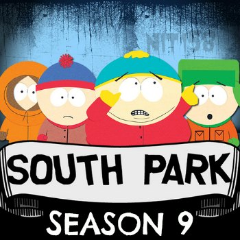

FYC://South Park s09 season 9 Complete 480p UNCENSORED WEB-DL x264 mp4 NIT158
Descption:
South Park s09 season 9 Complete UNCENSORED 480p WEB-DL x264 mp4 NIT158

IMDB
:
Format : MPEG-4 (mp4)
File Size : ~ 35 MB each episode (some eps lesser than that)
Video
:
[common for all episodes]
Format/Info : Advanced Video Codec (x264)
Format profile : Main@L3.1
Resolution : 848 x 480
Aspect ratio : 16:9
Frame rate mode : Constant
Frame rate : 23.976 fps
____________________________________________________________
Episode No./ Title .................................................. Duration ...... Bit rate
___________________________________________________________
s09e01 - Mr. Garrison's Fancy New Vagina ................. 22mn 5s ..... 180 Kbps
s09e02 - Die Hippie, Die ........................................,.... 22mn 4s ..... 210 Kbps
s09e03 - Wing ............................................................ 22mn 4s ..... 180 Kbps
s09e04 - Best Friends Forever ................................... 22mn 4s ...... 210 Kbps
s09e05 - The Losing Edge .......................................... 22mn 3s ..... 200 Kbps
s09e06 - The Death of Eric Cartman ........................... 22mn 4s ..... 170 Kbps
s09e07 - Erection Day ................................................. 22mn 4s ..... 200 Kbps
s09e08 - Two Days Before the Day After Tomorrow .... 22mn 4s ...... 210 Kbps
s09e09 - Marjorine ...................................................... 22mn 4s ..... 160 Kbps
s09e10 - Follow That Egg! ........................................... 22mn 5s ..... 170 Kbps
s09e11 - Ginger Kids ................................................... 22mn 6s ..... 160 Kbps
s09e12 - Trapped in the Closet ................................... 22mn 6s ..... 160 Kbps
s09e13 - Free Willzyx .................................................. 22mn 5s ..... 160 Kbps
s09e14 - Bloody Mary .................................................. 22mn 5s ..... 160 Kbps
______________________________________________________________
Audio
: [common for all ep.]
Format/Info : Advanced Audio Codec
Format profile : HE-AACv2 / HE-AAC / LC
Bit rate : 32.0 Kbps
Channel(s) : 2 channels / 1 channel / 1 channel
Channel positions : Front: L R / Front: C / Front: C
Sampling rate : 48.0 KHz / 48.0 KHz / 24.0 KHz
Language : English
Subtitles
:
Type : srt ( not hard coded .. can be disabled/turned off )
Language : English
Compatibility
:
iPad 1/2/3/4/mini, iPhone4/4S/5, iPOD touch 4/5, iPod nano 7, PS3, Xbox 360, WDTV, Amazon Kindle, all Tablets, other Android devices and of course PC
Notes:
There is no note for this torrent